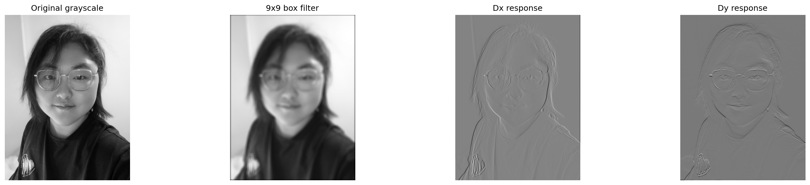
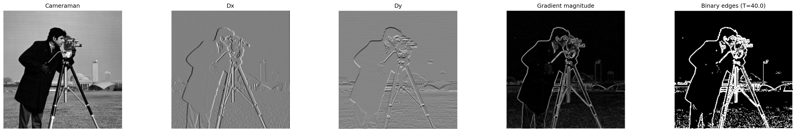
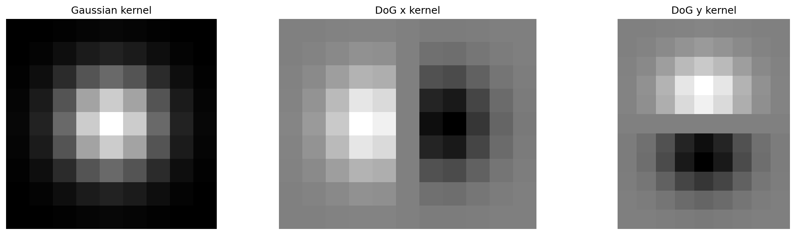
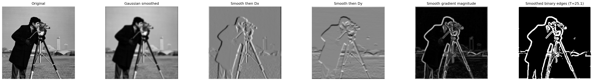
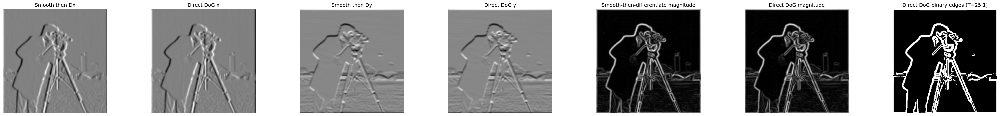
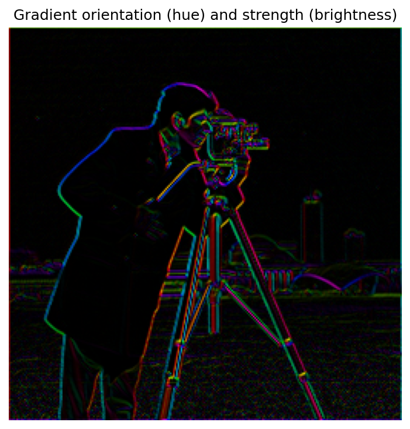

Part 1 · Fun with filters
Filters & edges
Implement convolution, measure local intensity change, and separate meaningful boundaries from fine texture and noise.
1.1 · From scratch
Convolution with four loops, then two
Both implementations use NumPy array operations, not a built-in convolution. I flip the kernel in both
axes, pad the image with zeros, and evaluate each output pixel. The four-loop version explicitly
accumulates every kernel coefficient. The two-loop version keeps the image-coordinate loops but replaces
the inner two loops with an elementwise product and np.sum.
The portrait is read as grayscale and resized to at most 512 pixels on its longest side. A normalized 9
× 9 box filter averages its neighborhood; Dx = [[1, 0, -1]] and its transpose reveal
intensity changes across the face, clothing, and background.

Zero padding and convolution, not correlation
For an odd kernel, each side receives half the kernel width or height in zeros, so the output keeps the
input dimensions. The implementation also handles even kernels with asymmetric padding consistent with
SciPy's mode="same". Setting padding=False gives the valid interior instead.
Zero padding can darken a box-filtered border and create strong artificial derivative responses where
the image meets the zero-valued exterior.
kh, kw = kernel.shape
pad_top, pad_left = kh // 2, kw // 2
pad_bottom, pad_right = kh - 1 - pad_top, kw - 1 - pad_left
padded = np.pad(image, ((pad_top, pad_bottom), (pad_left, pad_right)),
mode="constant", constant_values=0)
flipped = kernel[::-1, ::-1]
out_h = padded.shape[0] - kh + 1
out_w = padded.shape[1] - kw + 1
output = np.zeros((out_h, out_w), dtype=np.float64)Four-loop accumulation
for y in range(out_h):
for x in range(out_w):
total = 0.0
for ky in range(kh):
for kx in range(kw):
total += padded[y + ky, x + kx] * flipped[ky, kx]
output[y, x] = totalTwo-loop accumulation
for y in range(out_h):
for x in range(out_w):
patch = padded[y:y + kh, x:x + kw]
output[y, x] = np.sum(patch * flipped)Correctness and runtime
Both outputs pass np.allclose against
scipy.signal.convolve2d(image, kernel, mode="same", boundary="fill", fillvalue=0). The
correctness case uses an asymmetric 2 × 3 kernel, so it checks kernel flipping and even-kernel
alignment rather than only the easier symmetric-box case.
| Timing | Result (seconds) | Main cost |
|---|---|---|
| Four loops | 0.3870 | Python iteration over pixels and kernel entries |
| Two loops | 0.0654 | Python iteration over pixels; NumPy kernel reduction |
| SciPy | 0.0020 | Compiled convolution implementation |
The two-loop implementation is faster, but it still pays Python overhead at every pixel. SciPy is much faster on this example. These are illustrative measurements from one local run, not averaged benchmarks; all three implementations use the same image, kernel, and zero-fill convention.
1.2 · Finite difference operator
From intensity changes to an edge map
I convolve the cameraman image with the centered finite-difference filters Dx = [[1, 0, -1]]
and Dy = Dx.T. The horizontal derivative is strong at vertical boundaries; the vertical
derivative is strong at horizontal boundaries. Combining them makes the response independent of edge
direction.

Threshold choice
The displayed edge map uses the 85th percentile of the unnormalized magnitude as its threshold:
edges = magnitude >= np.percentile(magnitude, 85). This keeps roughly the strongest 15%
of responses, subject to ties. It is a compromise: the person's silhouette and camera remain visible,
while many weaker variations are suppressed. Some grass texture remains, and weak or broken boundaries
are lost. A lower threshold retains more detail but also more clutter; a higher threshold cleans the map
at the cost of continuity.
1.3 · Derivative of Gaussian
Smooth first, then differentiate
A derivative also responds to small fluctuations, so I first smooth with a 9 × 9 Gaussian of
standard deviation 1.5 pixels. I construct the Gaussian from cv2.getGaussianKernel and the
outer product of its one-dimensional weights, then convolve it with each finite-difference filter to
obtain a DoG kernel.


Compared with unsmoothed finite differences, the DoG response is less sensitive to tiny grass and background variations, but edge localization becomes less sharp. Each displayed binary map uses its own 85th-percentile threshold; these are not comparisons at one fixed numeric threshold. The magnitude images and boundary shapes show the smoothing effect independently of that choice.
One convolution versus two
This associativity identity only produces matching finite-image results when boundary handling is consistent. Cropping the intermediate blur to the original image size discards values needed by the second convolution near the frame. I retain the full blurred halo, differentiate it, and only then crop to the original size.

The two methods produce visually indistinguishable x, y, and magnitude responses, including at the image borders.
Bells & Whistle
Direction as hue, strength as brightness
I compute orientations without calling a built-in angle function. For each gradient, the ratio of the smaller absolute component to the larger is in [0, 1]. Half-angle range reduction makes the inverse-tangent series converge quickly; 16 terms recover the acute angle. Component ordering, signs, and quadrant corrections then place it in [0, 2π). A zero gradient is assigned angle zero but displayed black because its magnitude is zero.
HSV hue encodes the angle, saturation is one, and value is gradient magnitude divided by the maximum magnitude. Converting HSV to RGB makes edges with similar orientations share a hue while weak texture stays dim. Hue measures the directed intensity gradient, so reversing contrast shifts the hue by half a cycle. Since image y increases downward, the angle convention follows image coordinates.
